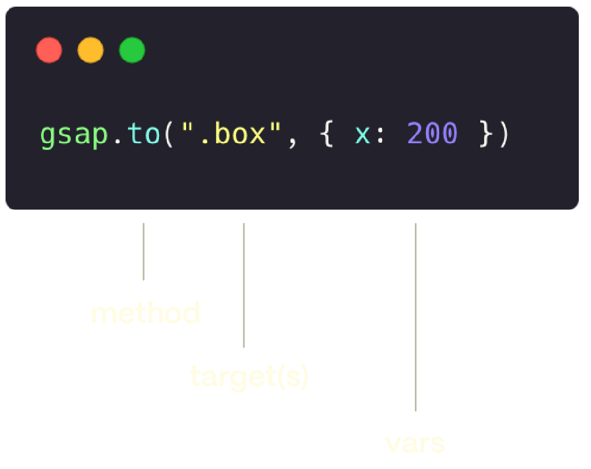

Animating with GSAP
Ellen 2025/08/??
What is GSAP?
- GreenSock Animation Platform (GSAP)
- JavaScript animation library
- Flash → JavaScript
- GSAP 3 (2019): 統一 plugins、簡化 API
Why GSAP over CSS?
- 效能優化 (60fps)
- 更多可控細節、進階效果
- 支援不同瀏覽器
- 支援原生、前端框架、WordPress...
CSS vs GSAP
CSS
.box {
animation: spin 2s linear infinite;
}
@keyframes spin {
to { transform: rotate(360deg); }
}
GSAP
gsap.to(".box", {
rotation: 360,
repeat: -1,
duration: 2,
ease: "linear"
});
Tween
一段動畫，控制目標在一段時間內的改變。
gsap.to()→ 改變成指定狀態gsap.from()→ 改變成原本狀態gsap.fromTo()→ 從 A 狀態改變成 B 狀態

Image from GSAP official docs